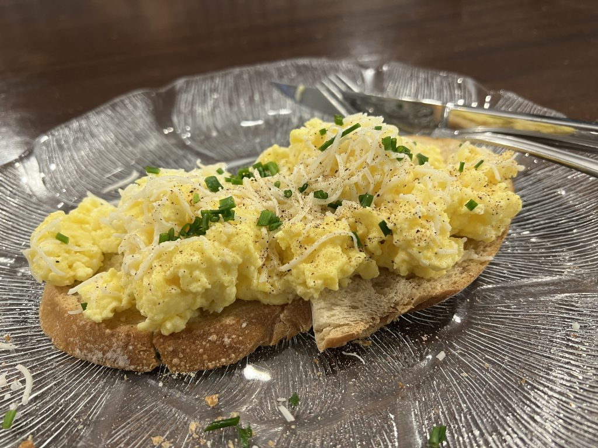

Return to Home
Soft Scrambled Eggs

Description
If you don't like scrambled eggs, you've probably
never had a soft scramble like this. These are the eggs
that convinced my wife I wasn't a degenerate frat boy. They're
very easy and will impress your friends or family, just take
your time and be patient. You got this!
Ingredients
- Four eggs
- 1/2 stick of butter
- Pinch of salt and pepper
- Chives - thinly sliced
- Parmesan cheese - grated
- One slice of the bread of your choice
Directions
- Set a medium saucepan on medium-low heat.
- Whisk the eggs. Add 75% of the chives and whish in.
- Toast your bread.
- Add butter to pan. When it starts to foam up, add in the eggs.
- Keep the eggs moving. Small curds will start to form as it heats. Keep stirring.
- Add in parmesan cheese to taste. Keep stirring.
- As the eggs cook, the mixture will appear to become thicker. Break up large curds and keep stirring.
- Keep cooking until texture mimics the picture above (soft, but hold it's shape on a plate).
- Serve over toast. Top with remaining chives and sprinkle with parmesan cheese.
- Enjoy!